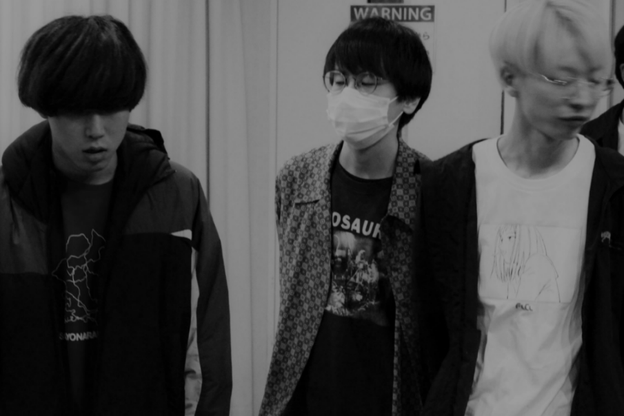

自己紹介
2016年、東京都の路上で結成
2017年3月、初ライブで初CD"3 songs"をリリース
2019年3月、pygmy I'm cricketとの共同企画で30曲入りはがき"good
society OST"をリリース
同年5月、同音源をカセットテープ化
2019年11月、pygmy I'm cricketとの共同企画"Olympic vol.2"でUFO
societyとPygmy I'm cricketによるスプリット"Athlete"をリリース
1990年代の、メロディの良いバンドたちに影響を受ける仲良し3人組。泣く事もある
